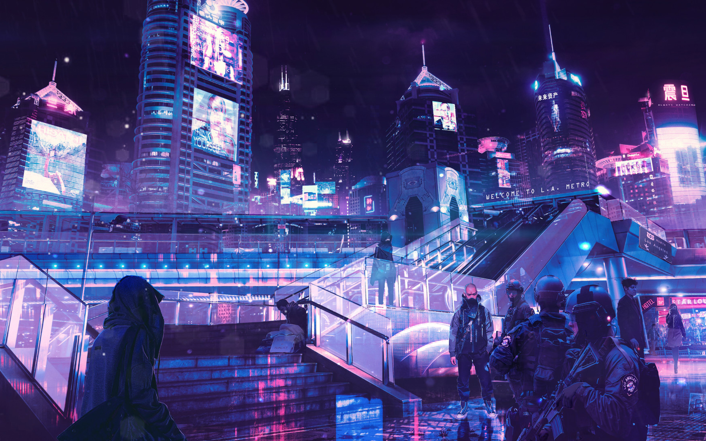
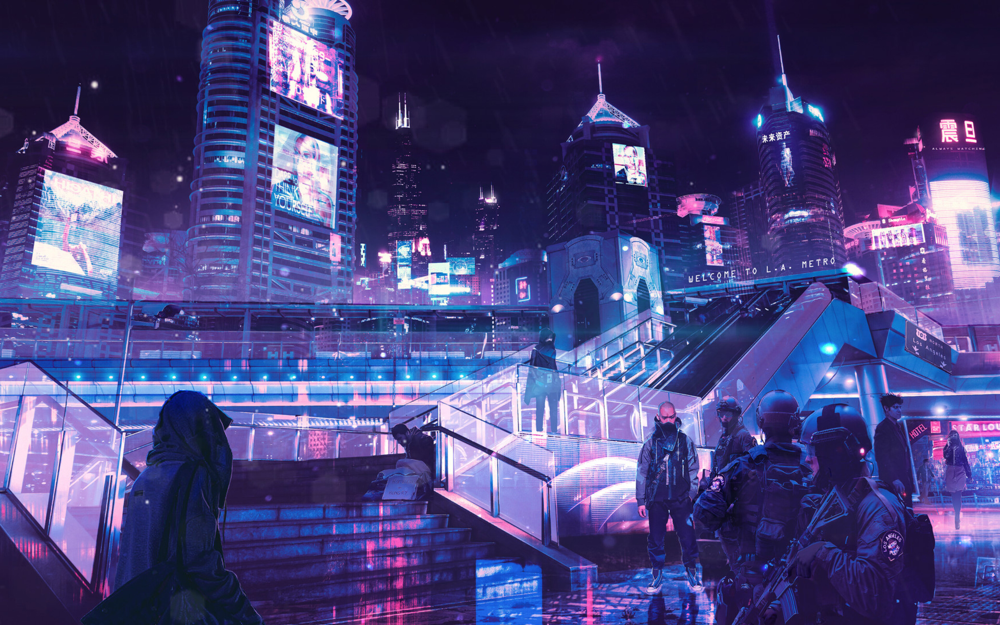

A cidade do futuro, por muitos anos, parecia só existir nas telas de cinema. Mas elas existem e estão se espalhando pelo mundo. Já pensou em morar em uma cidade onde tecnologia e sustentabilidade se unem para criar uma vida melhor? As cidades futuristas estão emergindo como soluções inovadoras para os desafios atuais.
As metrópoles futuristas nada mais é do que um redesenho das grandes cidades contemporâneas que existem atualmente: densamente povoadas, frequentemente sobrecarregadas, enfrentando desafios crescentes - desde a superlotação até os impactos ambientais negativos.
Elas são pensadas considerando uma variedade de aspectos que englobam o design arquitetônico, infraestrutura e tecnologia. E com a estimativa da Organização das Nações Unidas (ONU) de que a população mundial atingirá 10 bilhões de habitantes até 2050, a superlotação urbana se torna um dos problemas mais urgentes da atualidade.
Por isso, as cidades do futuro enfrentam uma série de desafios complexos para acomodar e atender a essa crescente demanda como densidade populacional, mobilidade urbana sustentável, diminuição do consumo de matérias-primas, desenvolvimento de sistemas de produção mais eficientes e o uso de combustíveis renováveis.